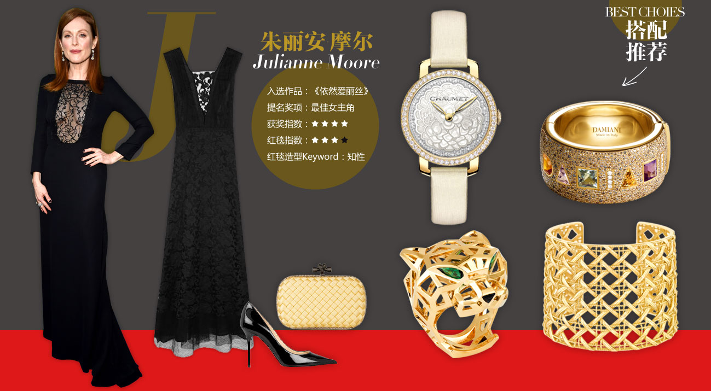

电影界最权威、最隆重的奥斯卡金像奖如约而至，每届电影节除了奖项争夺备受关注之外，女星们的红毯之争也是重中之重。有人曾说：奥斯卡即使得不到小金人，也一定要拼得红毯最美。


红毯tips 白色廓形礼服：白色礼服纯净恬静，廓形裙摆设计更显优雅风。 彩色宝石配饰：大颗彩色宝石的搭配，会打破白色裙装固有的沉闷。
Sergio Rossi高跟鞋
Sergio Rossi高跟鞋
Victoria Beckham
绉纱礼服
伯爵Piaget Rose Passion
系列项链
宝格丽MVSA系列
耳坠
萧邦Chopard Happy Diamonds Butterflies
系列腕表
DIOR高级珠宝ROSE PRE-CATELAN系列
粉色石英石戒指

红毯tips 深色镂空礼服：黑色礼服可成熟，也可妩媚，U型领口处的蕾丝点缀恰到好处。 金属珠宝搭配：黑色礼服搭配简单的金属类珠宝，就能够将知性完美的诠释。
Bottega Veneta手拿包
Jimmy Choo 漆皮高跟鞋
Adam Lippes棉质混纺
蕾丝绢网礼服
CHAUMET Hortensia 绣球花
珍贵珠宝腕表系列 黄金镶钻腕表
DAMIANI玳美雅
Tribute系列手镯
DIOR高级珠宝MY DIOR系列黄金宽手镯
2014卡地亚全新猎豹系列戒指